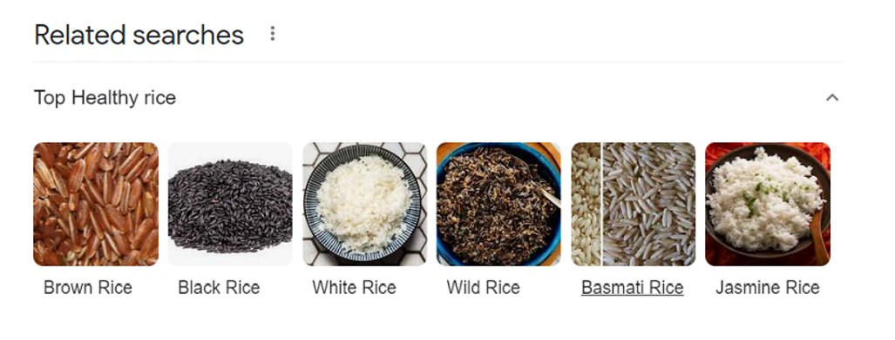
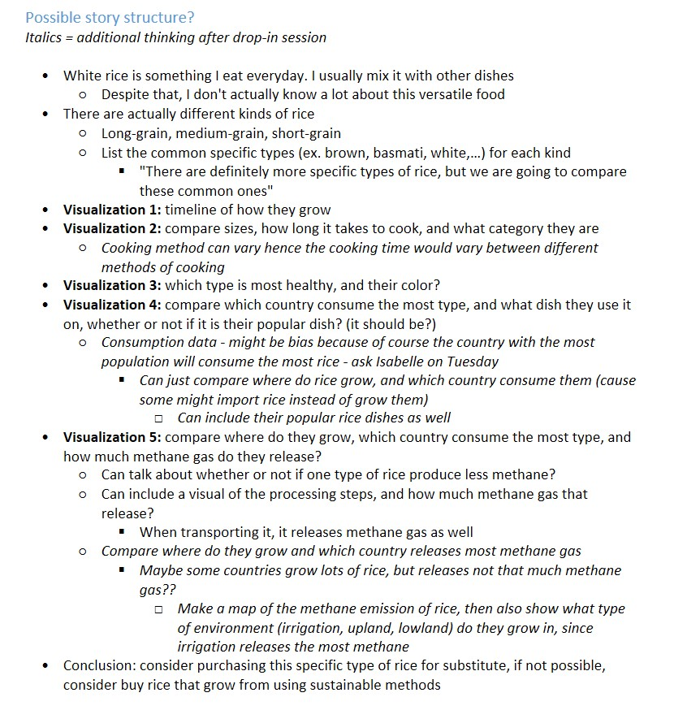
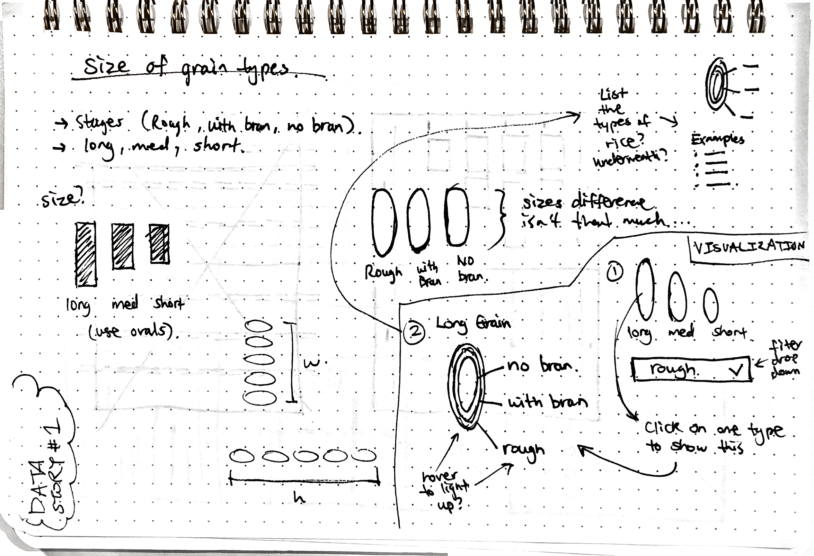
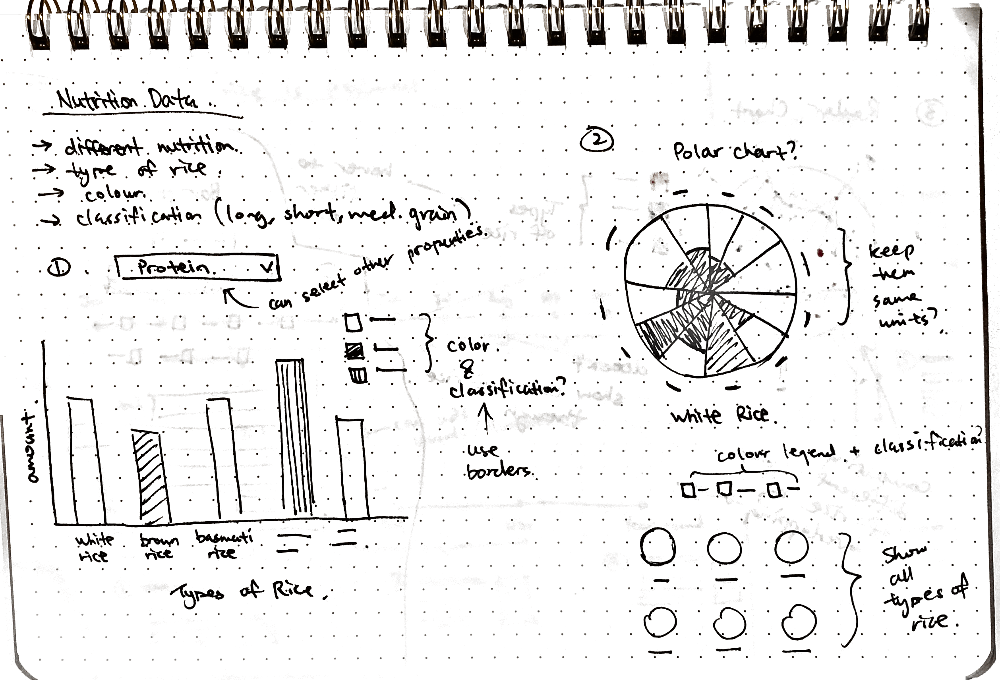
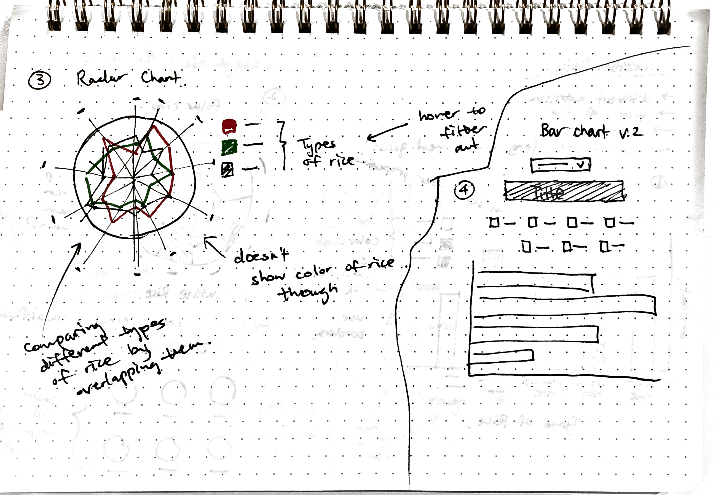
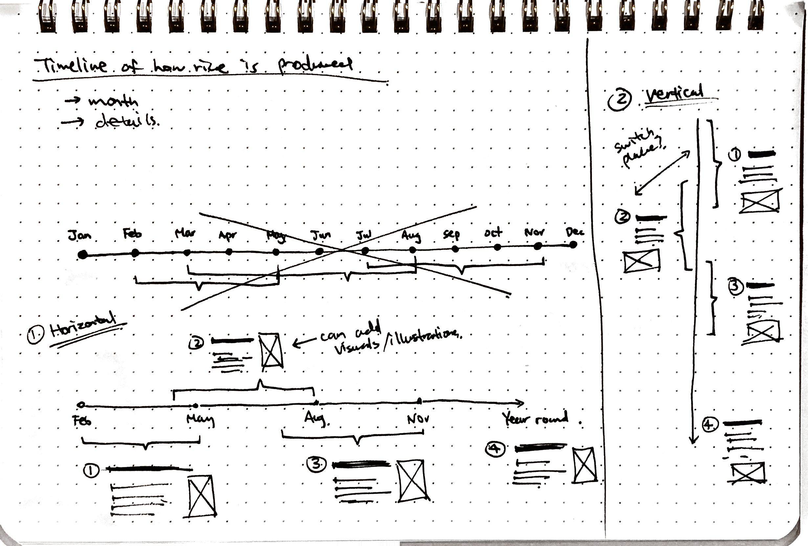

Brainstorming ingredients
During the brainstorming session taken place in class, I figured out that I want to do rice as my
dish/ingredient. Despite eating rice everyday, I don't actually know a lot about the ingredient.
I know that there are different types of rice. Maybe I can research the different types and use that
as the 5-10 ingredients.
To figure out the 5-10 ingredients, I decided to focus on the most common types - suggested by Google:
I also wrote a more organized list on how to structure my data story, and use that to help me figure out what kind of data to find
Finding data
The biggest challenge I encountered was trying to find data for the chosen ingredients. I was only able to find nutrition data for the ingredients and cooking time for some types. The other data that I found on size, production, consumption, and methane emission only focuses on rice in general. Hence I had to move on with the general data about rice.
More data in this Google Spreadsheet
Visualizations Brainstorming
   View the final version here